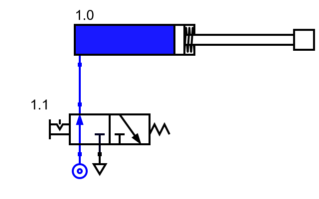
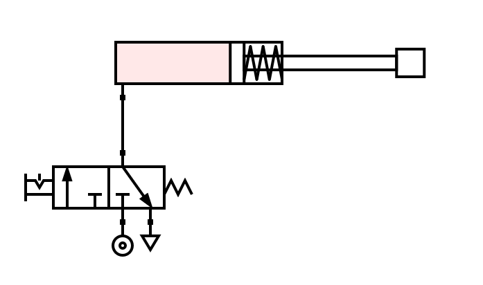
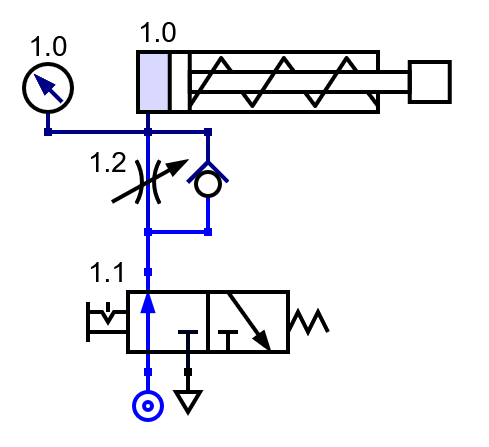
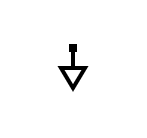

5. Cilindro de simple efecto¶
Un cilindro de simple efecto es un cilindro cuyo vástago sale fuera debido al aire comprimido que se introduce en la parte trasera.
El movimiento de entrada del vástago se realiza gracias a un muelle que dispone de poca fuerza, por lo que no sirve para mover cargas externas.
Este cilindro puede hacer fuerza hacia fuera, pero apenas hace fuerza al moverse hacia dentro.
Los cilindros de simple efecto se pilotan mediante una válvula 3/2 que puede inyectar aire comprimido por una vía o dejar escapar el aire comprimido del cilindro por esa misma vía hacia la atmósfera.
A continuación se muestra el esquema en reposo del cilindro de simple efecto:

Cuando accionamos la válvula 3/2, el aire que proviene de la unidad de mantenimiento pasa hacia la vía superior de la válvula y entra en la parte posterior del cilindro. Como consecuencia, el cilindro se llena de aire y el vástago sale del cilindro empujando la carga que tenga delante:
{kind=link}

Para finalizar, al llevar a reposo la válvula 3/2, el aire comprimido del interior del cilindro vuelve hacia atrás y sale por la vía de escape de la válvula 3/2:
{kind=link}

En el siguiente simulador, puedes probar a simular todos los movimientos del cilindro de simple efecto:
Cilindro con carga¶
Si añadimos una carga para que el cilindro la arrastre y un regulador de flujo de aire para que el llenado se haga más lento, podremos ver cómo el cilindro necesita una presión mínima antes de empezar a moverse:
{kind=link}

Cilindro de simple efecto arrastrando 20kg de carga, saliendo.¶
En el siguiente simulador puedes simular el funcionamiento del cilindro de simple efecto con carga:
Ejercicios¶
Explica las características principales de un cilindro de simple efecto.
Dibuja un esquema de un cilindro de simple efecto en reposo, comandado por una válvula 3/2.
Dibuja un esquema de un cilindro de simple efecto accionado, comandado por una válvula 3/2.
Simula el funcionamiento de un cilindro de simple efecto comandado por una válvula 3/2.
¿Qué ocurrirá si quitamos el escape de la válvula 3/2? Simula el funcionamiento. Explica cómo cambia el funcionamiento al retirar el escape y explica porqué se comporta de esa manera.

Escape neumático.¶
Dibuja de nuevo en este simulador el mismo esquema que aparece arriba en el cilindro con carga.
Recuerda seleccionar en el menú
Editar... Modificar.y clicar sobre el cilindro neumático y sobre la válvula de estranguladora de flujo para cambiar sus valores por defecto.Recuerda seleccionar en el menú
Editar... Voltear.para cambiar el sentido de la válvula antirretorno.Cambia la carga del cilindro a 60kg. ¿Qué presión mínima necesita el cilindro para comenzar a salir?